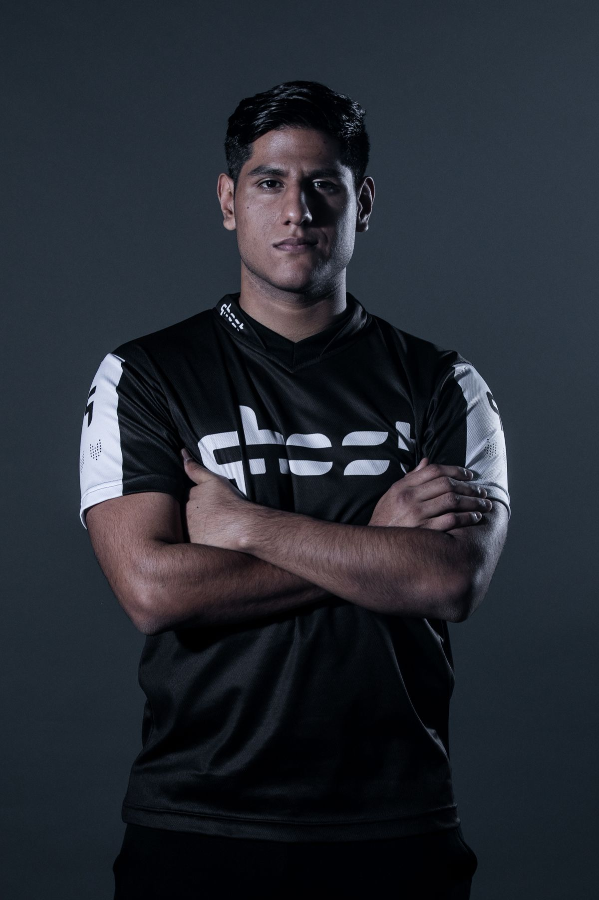
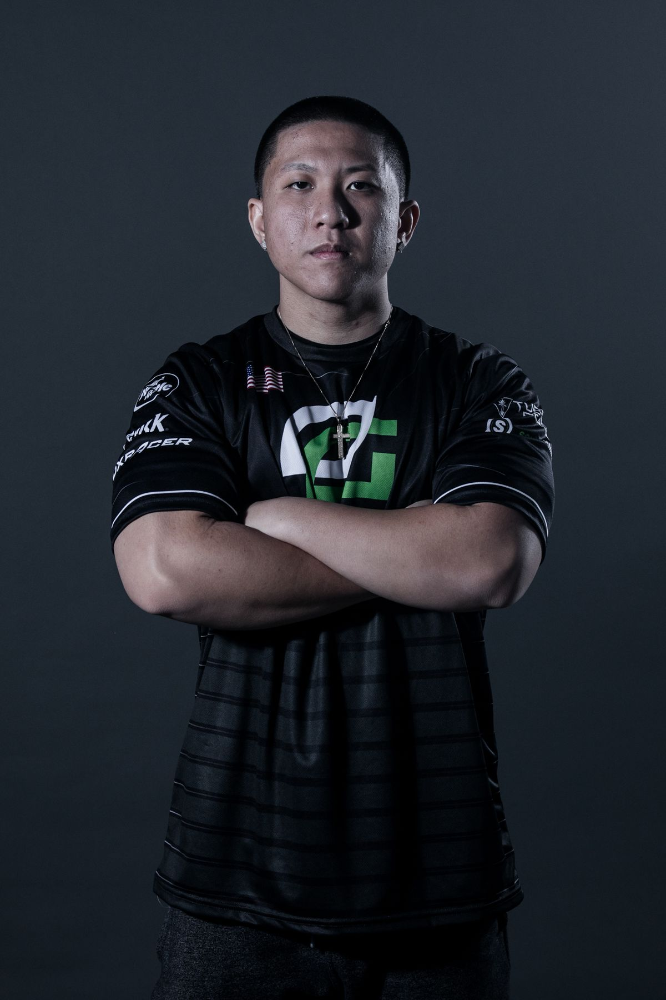
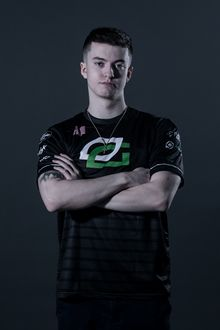

MEJORES JUGADORES
| 
|
DANIEL VELASCO SANTILLANA "IDENTIVEZ"
Daniel “Identivez” Velasco Santillana nació en Tamaulipas. Un joven solitario que utilizaba los videojuegos como escape y fue cuando conoció Gears of War para sobrellevar su infancia. En un inicio su familia no apoyaba los torneos hasta que comenzaron las competencias en México.
Comenzó su carrera dentro de Splyce cuando salió Gears of War 4. Dejó el equipo para crecer y porque sentía que era tóxico dentro de Splyce.
Fue un paso para alcanzar lo que él quería en la vida.
A mediados del año pasado Identivez entró al equipo norteamericano Ghost Gaming. Su primera participación la tuvo en la segunda temporada de Gears Pro Circuit en la Ciudad de México.
Identivez, gracias a su participación en Gears Vegas 2018,se volvió en el primer jugador mexicano en coronarse en Gears of War.
Su canal de Youtube es Identivez
|
ALEX ASCENCION "SUMUNS"
SuMuNs fue presentado a Gears of War 2 por un amigo a la edad de 11 años. Él le dijo a SuMuNs que era el mejor juego que había jugado, así que decidió probarlo. SuMuNs comenzó a jugarlo toda la noche e inmediatamente se volvió adicto al juego. Comenzó a entrar en la competencia vista al estar en una comunidad llamada Underground. Underground era similar a Gamebattles pero no se ejecutaba en un sitio web, y las clasificaciones se mantenían en un canal de YouTube. A partir de ahí, SuMuNs entró en Gamebattles en Gears of War 3 y jugó más de 2,000 partidos.
El videojuego favorito de SuMuNs es Gears of War 3 .
Su canal de Youtube es SuMuNs

| |
| 
|
GILBERT ROJO "XPLOSIVE"
Xplosive fue presentado a Gears of War en 2006 a través de su ahora cuñado, quien traería su Xbox 360 cada vez que decidiera visitarlo. En ese momento, Xplosive tenía solo unos 8 años y pensó que el juego era bastante aterrador. Xplosive ha jugado casi todos los títulos de esports en la consola e incluso algunos juegos para PC. El único que consideró jugar competitivamente fue Call of Duty: Advanced Warfare . Xplosive se metió en Gears competitivos en Gears of War 2 donde compitió en Underground.
Su juego favorito es Gears of War: Ultimate Edition debido a la cantidad de éxito que él y su equipo tuvieron.
Video mostrando su habilidad Xplosive Montage
|
BILLY PUTNAM "MENTAL"
MentaL fue presentado a Gears of War por su hermano mayor cuando tenía 10 años. MentaL entró en juego competitivo de mi viejo amigo Aggrivate en Gears of War 2 jugando partidas de Gamebattle. Después de eso, comenzó a ver eventos de Hypestation en Gears of War 3 . MentaL compitió en Call of Duty: Advanced Warfare junto a Xplosive y su ex compañero Critical Kyle. Casi se clasificaron para la Temporada 1 de la UMG Semi-Pro League, pero terminaron a un juego de 5 de la calificación.
Su juego favorito es Gears of War 2 .
Su canal de Youtube es MentaL

| |